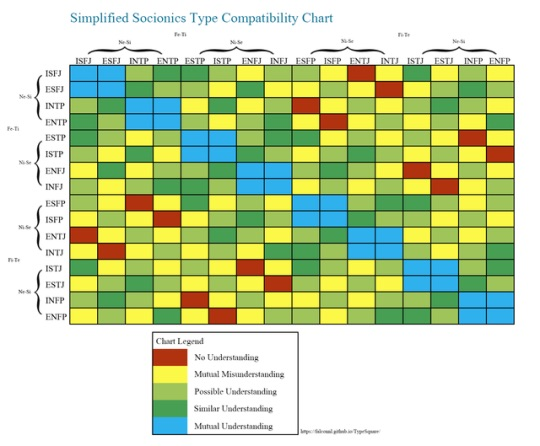

It’s important to understand that socionics has a separate identity from Myer’s Briggs. Both are built off Jung’s principles (ie., the original eight types), but they differ slightly in theory. Because they’re derived from the same material ultimately, they are often compared or used in conjunction with one another. Socionics differs from Myer’s Briggs when it comes to the function stack—but the main difference that many typology nerds focus on is the emphasis socionics puts on typology and relationships. Here’s an example of a theoretical compatibility chart made with both Myer’s Briggs and socionics in mind!
(Note: the types used in socionics are extremely similar to those in Myer’s Briggs—but as they’re technically separate, the personalities are written out differently.
MBTI: ENTP
Socionics: ENTp)

Some Favorite Pairings Within the MBTI Community:
ISFJ x ENTP
INTJ x INTP
INTJ x ENFP
INFJ x INFP
ISTP x ISFP
ESTP x ISFP
“Golden Pairs” or “Ideal Matches”
These selections are usually determined by compatibility rather than aesthetic or appeal in fiction. The focus is on “what’s best for you” and how well the types tend to work as a team. You’ll likely notice a common theme here: introverts with extroverts, sensors with sensors/intuitives with intuitives, perceivers with judgers, and a thinking/feeing tossup. This is because introverts and extroverts are naturally drawn to each other, a decision-maker or a “leader” is beneficial and S/N communication is on average harder than N/N or S/S. Typically, when trying to guess at real couples, the most sure thing to bet on is Thinking and Feeling both being present—Feeling manifesting as feminine and Thinking manifesting as masculine; the reason being that societal norms and the correlation between type and gender can play a big role in matchmaking.
ISFJ x ESTP
ENFJ x INFP
ENTJ x INTP
ENTP x INFJ
INTJ x ENFP
ISFP x ESFJ
ISTP x ESTJ